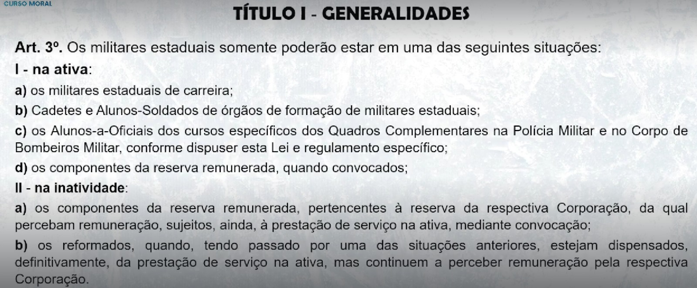

TÍTULO I - GENERALIDADES
🎥 01. Estatuto Militar - Aula 1

A situação, direitos, prerrogativas, deveres e obrigações dos militares estaduais. (Art. 1º)
(S) SITUAÇÃO (Ativa ou Inativa) (Art. 3º)
(D) DIREITO (Art. 52 ao 68)
(P) PRERROGATIVAS (Art. 69 ao 76)
(O) OBRIGAÇÕES
(D) DEVERES

🎥 02. Estatuto Militar - Aula 2
Os membros das Corporações Militares do Estado, instituições organizadas com base na hierarquia e disciplina, forças auxiliares e reserva do Exército, subordinadas ao Governador do Estado e vinculadas operacionalmente à Secretaria da Segurança Pública e Defesa Social. (Art. 2º)
💡 Parágrafo único. A vinculação é ato ou efeito de ficarem as Corporações Militares do Estado sob a direção operacional da Secretaria da Segurança Pública e Defesa Social. (Art. 2º)
💡 Resumo do Artigo:
📍 (1) Hierarquia e disciplina são as bases institucionais
📍 (2) Forças auxiliares do EB
📍 (3) São subordinadas ao governador (Chefe Supremo)
📍 (4) Vinculadas operacionalmente à Secretaria da Segurança Pública e Defesa Social
📍 (1) exercer a polícia ostensiva,
📍 (2) preservar a ordem pública,
📍 (3) proteger a incolumidade da pessoa e do patrimônio e
📍 (4) garantir os Poderes constituídos no regular desempenho de suas competências, cumprindo as requisições emanadas de qualquer destes,
📍 (5) bem como exercer a atividade de polícia judiciária militar estadual, relativa aos
crimes militares definidos em lei, inerentes a seus integrantes;
📍 (1) a proteção da pessoa e do patrimônio, visando à incolumidade em situações de risco, infortúnio ou de calamidade,
📍 (2) a execução de atividades de defesa civil,
📍 (3) devendo cumprimento às requisições emanadas dos Poderes estaduais,
📍 (4) bem como exercer a atividade de polícia judiciária militar estadual, relativa aos crimes militares definidos em lei, inerentes a seus integrantes.
💡 I - na ativa:
📍 a) os militares estaduais de carreira;
📍 b) Cadetes e Alunos-Soldados de órgãos de formação de militares estaduais;
📍 c) os Alunos-a-Oficiais dos cursos específicos dos Quadros Complementares na Polícia
Militar e no Corpo de Bombeiros Militar, conforme dispuser esta Lei e regulamento
específico; (modificado pela LEI Nº17.478, 17 de maio de 2021)
📍 d) os componentes da reserva remunerada, quando convocados;
💡 II - na inatividade:
📍 a) os componentes da reserva remunerada, pertencentes à reserva da respectiva
Corporação, da qual percebam remuneração, sujeitos, ainda, à prestação de serviço na
ativa, mediante convocação;
📍 b) os reformados, quando, tendo passado por uma das situações anteriores, estejam
dispensados, definitivamente, da prestação de serviço na ativa, mas continuem a perceber
remuneração pela respectiva Corporação. (Art. 3º)

No exercício de atividades inerentes à Polícia Militar e ao Corpo de Bombeiros Militar, compreendendo todos os encargos previstos na legislação especifica e relacionados com as missões fundamentais da Corporação. (Art. 4º)
atividade continuada e inteiramente devotada às finalidades e missões fundamentais das Corporações Militares estaduais, denominada atividade militar estadual.
💡 Parágrafo único. A carreira militar estadual é privativa do pessoal da ativa das Corporações Militares do Estado, iniciando-se com o ingresso e obedecendo-se à sequência de graus
hierárquicos. (Art. 5º)
conjunto de atribuições, deveres e responsabilidades que se constituem em obrigações do respectivo titular. (Art. 37)
(D) DEVERES
(A) ATRIBUIÇÕES
(R) RESPONSABILIDADES (funcional, penal, civil)
o exercício das obrigações inerentes a cargo militar
estadual. (Art. 39)
autoridade, deveres e responsabilidades de que o militar
estadual está investido legalmente, quando conduz subordinados ou dirige uma
Organização Militar Estadual, sendo vinculado ao grau hierárquico e constituindo uma
prerrogativa impessoal, em cujo exercício o militar estadual se define e se caracteriza como chefe. (Art. 42)
(D) DEVERES
(A) AUTORIDADE
(R) RESPONSABILIDADES (funcional, penal, civil)

Boletim Interno da respectiva Corporação Militar. (Art. 8º, Parágrafo único)
no que couber, aos militares estaduais da reserva remunerada e aos reformados.
Parágrafo único. O voluntário incluído com base na Lei nº 13.326, de 15 de julho de 2003,
estará sujeito a normas próprias, a serem regulamentadas por Decreto do Chefe do Poder
Executivo, na conformidade do art.2º da citada Lei.